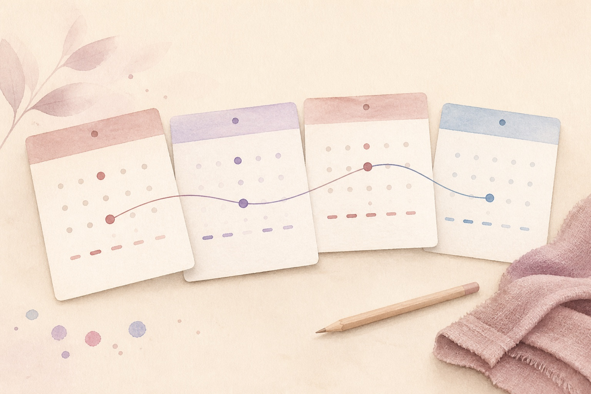

There is no single perfect cycle
Twenty-eight days is a familiar average, not a target everyone needs to match. The U.S. Office on Women’s Health says adult cycles can still be regular when they usually fall between 24 and 38 days. Some people can predict the start almost exactly, while others have a regular pattern that moves by a few days.
Life stage matters too. Cycles may be less regular in the first years after periods begin and during perimenopause. Pregnancy, breastfeeding, hormonal contraception, and changes in health or routine can also alter bleeding. A number makes sense only when it is read in context.
Start with your own baseline
Cycle health is easier to read when you know what is typical for you. Look across several cycles rather than judging one early or late period. A useful baseline has three parts: the time from one period start to the next, how long and how heavily you bleed, and symptoms such as pain, fatigue, headaches, or mood changes.
The impact on daily life belongs in that baseline. Pain or bleeding that makes you miss work, school, exercise, sleep, or ordinary plans is clinically useful information. It should not be dismissed just because the calendar interval looks common.
A change is a clue, not a diagnosis
A new pattern can have many explanations. Stress, illness, substantial weight change, intense exercise, pregnancy, a contraception change, thyroid conditions, PCOS, and the transition to menopause are among the possibilities described by public health guidance. The same calendar change can therefore mean different things for different people.
Use the record to ask a better question: what changed, when did it begin, and what else happened at the same time? A tracker cannot identify the cause. It can help you bring a more accurate timeline to a clinician instead of relying on memory.

A low-effort monthly check-in
Record the first and last day of bleeding, then add one short note for the heaviest day and any symptom that changed what you could do. If something unusual happens, note the date and a concrete description such as ‘needed to change protection every hour for three hours’ or ‘pelvic pain made me leave work.’
Consistency matters more than detail. You do not need to label every sensation or interpret it as a hormone change. Record what you observed, along with relevant context such as a missed period, a new contraceptive method, medication change, illness, or possible pregnancy.
When the pattern deserves medical attention
Talk with a clinician if previously regular periods become irregular, cycles repeatedly fall outside the range your clinician considers appropriate, a period is absent for three months when you are not pregnant or breastfeeding, pain interferes with daily activities, or bleeding is unusually heavy, happens between periods, after sex, or after menopause.
Seek urgent medical advice for a missed period followed by unusual bleeding and pelvic or abdominal pain because ectopic pregnancy must be ruled out. Very heavy bleeding with dizziness, weakness, chest pain, or trouble breathing also needs prompt care. Follow the urgent-care guidance for your location.
Use MiniCycle as a record, not a verdict
MiniCycle can show period dates, recent cycle statistics, and estimated future dates in one place. Its daily notes are useful for short observations about bleeding, pain, energy, or an appointment. Estimates will change as the underlying record changes, and they do not confirm ovulation, pregnancy, or a medical condition.
A calm record has one job: make your own pattern easier to see and communicate. If a symptom worries you, you do not need to wait for an app to collect more data before asking a healthcare professional.
MiniCycle for iPhone
Try MiniCycle
MiniCycle is built for a clean iPhone period calendar, local records, simple statistics, and a home screen widget.
MiniCycle editorial